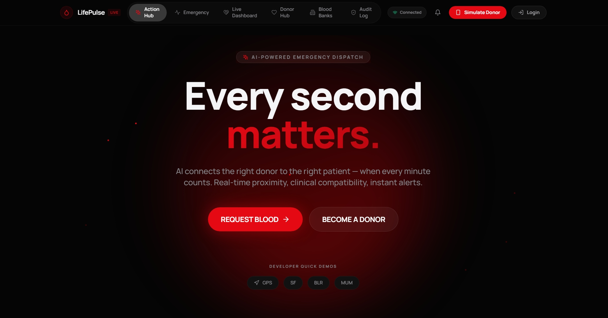
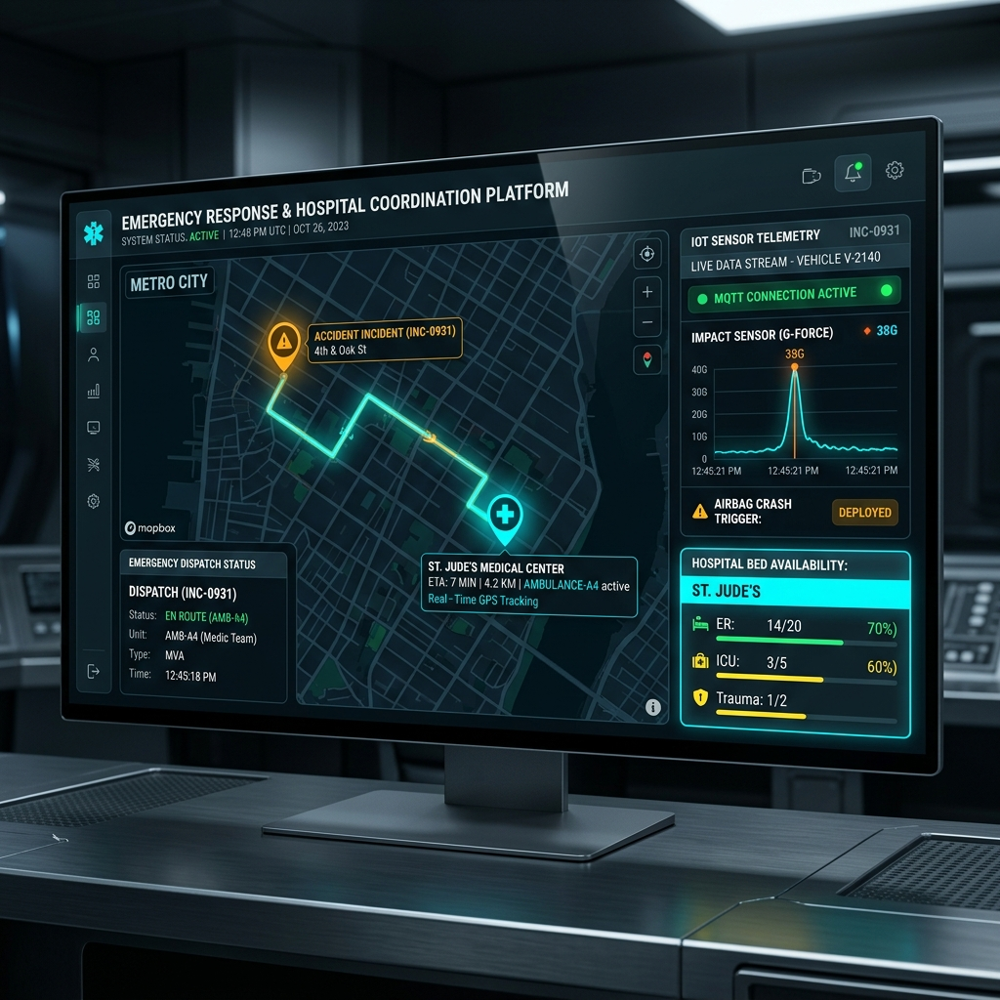
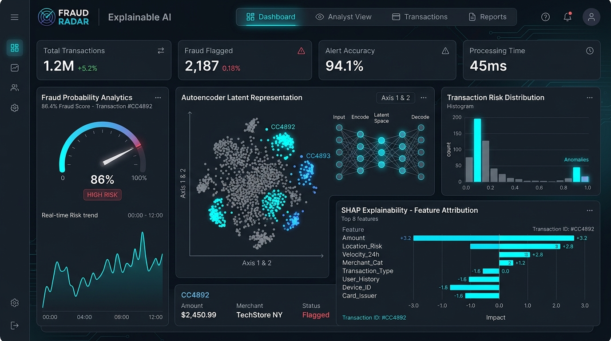

Featured Projects
Featured Projects
2026
LifePulse AI – Smart Blood Donation Network
Emergency Healthcare • Full-Stack • Real-Time Systems
WHAT I BUILT
Built and deployed a full-stack emergency blood donation platform that matches eligible nearby donors with urgent requests using blood-group compatibility, donor eligibility, availability, geographic proximity, and ring-based escalation.
KEY TECHNICAL IMPLEMENTATION
Designed a geospatial distance and blood-type scoring algorithm for emergency donor-ranking. Implemented real-time push notifications via Firebase Cloud Messaging and live GPS donor tracking using Browser Geolocation API and WebSockets. Integrated road-based ETA via OSRM, normalized database schemas with spatial PostGIS indexing, and tuned Redis caching for sub-second responses under load while strictly enforcing a 56-day donor recovery period.
IMPORTANT RESULT
Sub-second donor dispatch latency and 100% reliable real-time tracking across WebSockets and Firebase fallbacks.
Built and deployed a full-stack emergency blood donation platform that matches eligible nearby donors with urgent requests using blood-group compatibility, donor eligibility, availability, geographic proximity, and ring-based escalation.
KEY TECHNICAL IMPLEMENTATION
Designed a geospatial distance and blood-type scoring algorithm for emergency donor-ranking. Implemented real-time push notifications via Firebase Cloud Messaging and live GPS donor tracking using Browser Geolocation API and WebSockets. Integrated road-based ETA via OSRM, normalized database schemas with spatial PostGIS indexing, and tuned Redis caching for sub-second responses under load while strictly enforcing a 56-day donor recovery period.
IMPORTANT RESULT
Sub-second donor dispatch latency and 100% reliable real-time tracking across WebSockets and Firebase fallbacks.
Emergency Request
→
Eligible Donor Matching
→
Donor Dispatch
→
Donor Accepts
→
Live GPS Tracking
→
Arrival
→
Donation
→
Completion
React
FastAPI
PostgreSQL / PostGIS
Redis
WebSockets
Firebase
OSRM
Alembic

2026
Emergency Response & Hospital Coordination Platform
IoT • Distributed Systems • Emergency Response
WHAT I BUILT
An IoT accident-detection system using Arduino/Raspberry Pi airbag-crash sensors that streams sensor data to the backend through MQTT/HTTP with zero manual reporting delay.
KEY TECHNICAL IMPLEMENTATION
Architected a fault-tolerant hospital coordination backend across 20+ decoupled REST API endpoints using FastAPI, PostgreSQL/PostGIS for geospatial queries, and WebSockets/Firebase for real-time synchronization. Sustained correct hospital matching during partial outages, achieving zero incorrect routing in failure simulations. Applied modular object-oriented design and comprehensive pytest unit and integration test suites.
IMPORTANT RESULT
Achieved zero incorrect routing in failure simulations, utilizing PostgreSQL/PostGIS indexing to optimize geospatial query performance.
An IoT accident-detection system using Arduino/Raspberry Pi airbag-crash sensors that streams sensor data to the backend through MQTT/HTTP with zero manual reporting delay.
KEY TECHNICAL IMPLEMENTATION
Architected a fault-tolerant hospital coordination backend across 20+ decoupled REST API endpoints using FastAPI, PostgreSQL/PostGIS for geospatial queries, and WebSockets/Firebase for real-time synchronization. Sustained correct hospital matching during partial outages, achieving zero incorrect routing in failure simulations. Applied modular object-oriented design and comprehensive pytest unit and integration test suites.
IMPORTANT RESULT
Achieved zero incorrect routing in failure simulations, utilizing PostgreSQL/PostGIS indexing to optimize geospatial query performance.
Crash Sensor Trigger
→
MQTT / HTTP Telemetry
→
Fault-Tolerant Routing
→
Hospital Bed Matching
→
Real-Time WebSocket Sync
→
Emergency Dispatch
FastAPI
PostgreSQL / PostGIS
Redis
WebSockets
Firebase
Arduino / Raspberry Pi
MQTT
pytest

2024–2025
Credit Card Fraud Detection (Fraud Radar)
Machine Learning • Deep Learning • Explainable AI (XAI)
WHAT I BUILT
A production-grade hybrid fraud detection system tackling severe class imbalance across 284,807 Kaggle credit card transactions (0.17% fraud rate), featuring instant fraud scoring and full transparency via SHAP feature attributions.
KEY TECHNICAL IMPLEMENTATION
Engineered a deep neural Autoencoder compressing 30 numerical features down to 12 latent representations, concatenating latent features and reconstruction errors into a 43-dimensional vector. Trained an optimized Random Forest classifier achieving 0.977 ROC-AUC, 0.817 PR-AUC, and 0.80 F1-Score (Precision 0.78, Recall 0.83, MCC 0.802). Integrated TreeExplainer SHAP plots for real-time local decision attribution and batch evaluation.
IMPORTANT RESULT
0.977 ROC-AUC and 0.80 F1-score with interpretable SHAP explanations for regulatory compliance.
A production-grade hybrid fraud detection system tackling severe class imbalance across 284,807 Kaggle credit card transactions (0.17% fraud rate), featuring instant fraud scoring and full transparency via SHAP feature attributions.
KEY TECHNICAL IMPLEMENTATION
Engineered a deep neural Autoencoder compressing 30 numerical features down to 12 latent representations, concatenating latent features and reconstruction errors into a 43-dimensional vector. Trained an optimized Random Forest classifier achieving 0.977 ROC-AUC, 0.817 PR-AUC, and 0.80 F1-Score (Precision 0.78, Recall 0.83, MCC 0.802). Integrated TreeExplainer SHAP plots for real-time local decision attribution and batch evaluation.
IMPORTANT RESULT
0.977 ROC-AUC and 0.80 F1-score with interpretable SHAP explanations for regulatory compliance.
Transaction Ingestion
→
StandardScaler Normalization
→
Autoencoder Compression
→
43-Dim Feature Vector
→
Random Forest Prediction
→
SHAP TreeExplainer Attribution
Python
Streamlit
Scikit-learn
TensorFlow / Keras
SHAP
Docker
Pandas
NumPy
